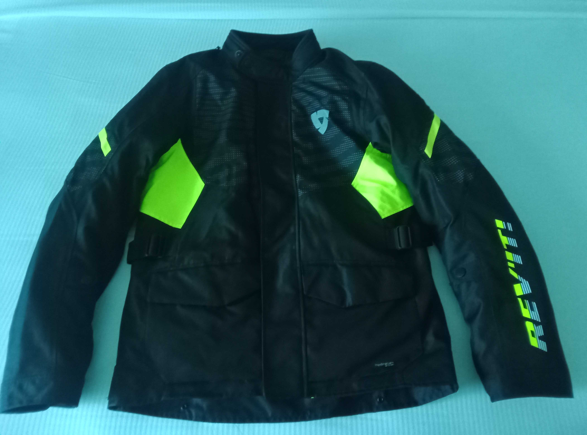

JACKET REVIEW
Revit Duke H2O

The jacket is marketed as an entry level all season jacket which I paid $245 for. The jacket comes fitted with armour for the elbows and shoulders, there is a pocket in the jacket for a spine protector which I purchased at an extra cost of $57.
I have yet to test the waterproofing claims as until now I have only been caught in one minor shower during which the jacket got wet but not soaked. The jacket has two exterior pockets that are secured with Velcro flaps and are reasonably sized. The main zip is covered by a full length flap which is secured in place by a full length Velcro strip. There is a zipped pocket in the breast area which is also covered by the flap that covers the main zip.
The thermal liner is held in place by small plastic pop studs around the inside of the jacket and at the cuffs. I have not yet had the necessity to wear the thermal liner so I can not report on its effectiveness or otherwise.
The things that I like about the jacket are that it a reasonably good fit and the shoulder armour is not so big that my helmet does not hit it when I turn my head to look behind me, unlike my previous jacket. The Velcro fastening allows me to easily open the jacket when riding to get more ventilation when hot and to close it if the temperature drops.
The things that i dislike about the jacket are that the Velcro fasteners on the cuffs are aligned that the Velcro attaches only when the cuffs are closed. When you want to leave the cuffs open for ventilation in hot weather, the securing tab had nothing to attach to and flaps about in the wind. To remedy this I had to buy some Velcro and glue it to the jacket so that I could secure the tabs when the cuffs were open.
The same applies to the collar fastening, as when you want it open for ventilation again there is nothing to secure it and this also flaps about in the wind. However, as this has a plastic pop fastener on it, it can be quite painful when it whips against your neck. Again to remedy this I had to glue Velcro to both the jacket and the collar so that i could secure it in the open position.
In my opinion these are design flaws in the jacket which leads me to believe that whoever designed the jacket was either not a biker or was someone who only considered that the jacket would only be used with the collar and the cuffs being closed at all times whilst being worn on a bike. In any case, I am of the opinion that I should not have had to make alterations to the jacket to prevent anything flapping about in the wind when the collar and cuffs were opened for ventilation.
Once I have worn the jacket in the rain I shall update this review as appropriate.